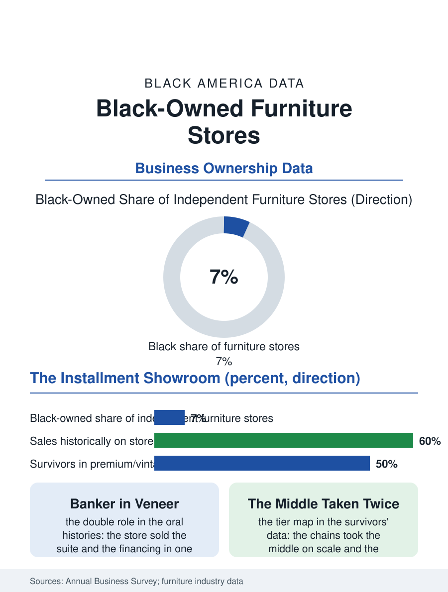

Black Business
Banker in Veneer: Black-Owned Furniture Stores
The suite on time, the proprietor as banker, and the parlor's genealogy kept in the survivors' books. The furniture file.

The furniture store was the credit economy's showroom: the suite sold on the weekly payment, delivered to the parlor it would furnish for a generation, and the Black-owned furniture store's place in that economy, as the creditor the banks would not be, is a chapter of the community's financial history as much as its retail one. The business census counts the furniture stores in the thousands, the independents pressed between the chains and the platforms. This article reads the furniture file.
The Suite on Time
The model's foundation was the installment book: the furniture's ticket, the bedroom suite and the living room's set, exceeded the working family's cash in every era, so the store that sold the furniture sold the financing with it, carrying the account on its own ledger at the terms the oral histories remember in both their kindness and their cost, the proprietor as the neighborhood's banker in a suit of walnut veneer, the repossession's shadow and the paid-off pride both in the book's margins. The rent-to-own era industrialized the model at harsher terms from the chain tier, the weekly payment's total reaching the multiples the consumer files record, against which the independent's own book, priced by the relationship, competed as the neighborhood's lesser evil and occasional benefactor. The showroom's theater was the product's other half, the room settings that taught the aspiration the payment bought, the parlor's arrangement being a cultural text the store composed for the neighborhood's imitation at the era's standard. The mattress's transformation into a shipped foam commodity is the file's latest weather, the bed-in-a-box's warehouse pricing the category that was the furniture store's steadiest ticket, and the survivors' answer, the sleep shop's consultation and the adjustable base's service, reprising the old model's lesson in the new category: the store survives where the service is the product and dies where only the object was. The office furniture's contract tier, the government's and the institutions' furnishing bought through the procurement files, is the independent's remaining volume channel where the certification's door opens.
Ashley's Shadow and the Platform's Warehouse
The modern file is the consolidation's: the great chains' buying scale and the import container's price collapse repriced the suite below the independent's cost structure, while the platform's furniture, shipped flat and assembled by the customer, stripped the delivery and the service that were the independent's remaining defenses, leaving the tiers the survivors occupy, the premium and design tier where the interiors file's firms live, the credit tier's remnant, and the secondhand and vintage furniture's revival in the resale file's rooms. The Black-owned store's historical position compounds the general file's: the credit book's clientele was the community's own, and the store's decline is therefore read in the neighborhood as the bank's departure in furniture form, the installment relationship being among the credit file's oldest entries in the community's own institutions.
The Parlor's Keeper
The furniture file closes on the room the store furnished, because the parlor suite was the family's public self for three generations of the culture's domestic history, the plastic-covered sofa of the memory's comedy being the store's product preserved by the customer's reverence, a durability no flat-pack has yet inspired. The survivors sell the heirloom's successor at the quality tier or the story's at the vintage's, in rooms whose proprietors know the genealogy of the neighborhood's front rooms as no platform's algorithm attempts. The census counts the furniture stores in steady decline across the independent tier. The file's last entry is the delivery truck's Saturday, the suite carried up the steps it will face for thirty years, by the store whose book holds the family's name in the proprietor's hand, an entry in the oldest credit ledger the neighborhood keeps, still open in the surviving stores to the grandchildren of its first accounts. The warehouse's back room holds the file's final image in reserve, the returned and the repossessed and the repaired awaiting their second households, the store's mercy and its margin in the same inventory. The book's last page for the paid account is marked in the proprietor's hand with the flourish the neighborhood reads as the family's name cleared, a certificate no agency issues. The ledger's hand is known on the whole street.
More in Black Business
Black-Owned Businesses: Counts, Receipts, and the Representation Gap
About 161,000 Black-owned employer firms and three million solo ventures: how the Census Bureau counts Black business ownership, where firms concentrate, and the gap between population share and business share.
Black Median Net Worth: The Wealth Gap in Federal Reserve Data
The Federal Reserve puts Black median family net worth at $44,900, against $285,000 for White families — about 16 cents on the dollar. The widest gap in economic data.
Black Buying Power: The $1.8 Trillion Consumer Economy
Black buying power is estimated at about $1.8 trillion — larger than the economy of most nations. What the figure measures, who produces it, and what it buys.
Source: U.S. Census Bureau, Annual Business Survey for furniture stores; Furniture Today industry data.